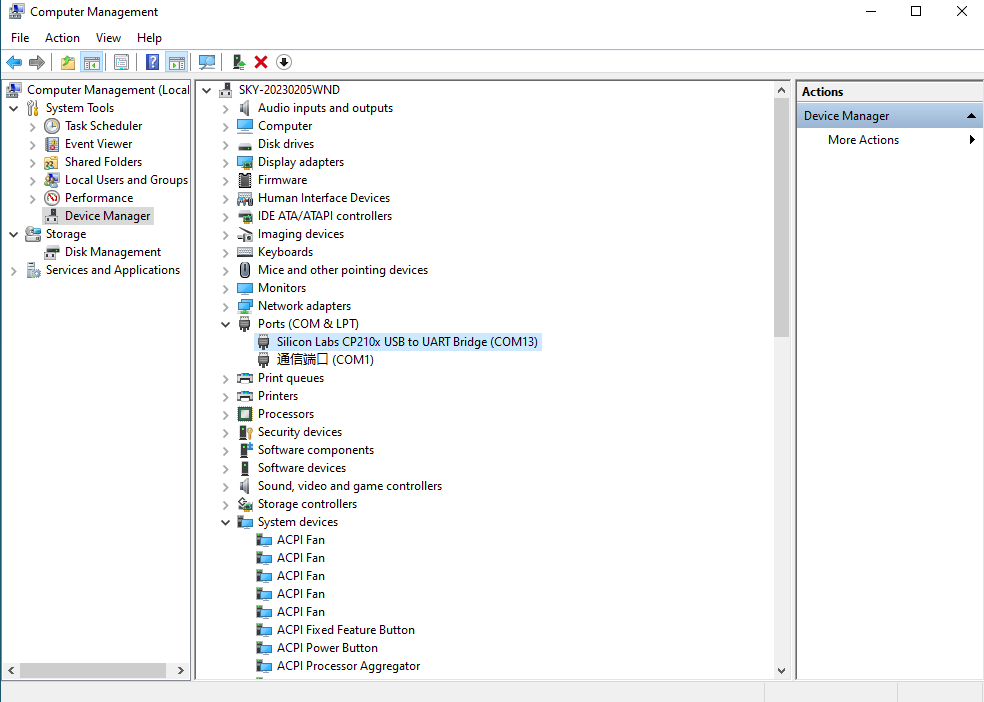
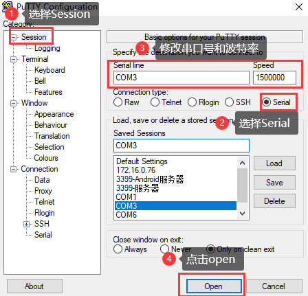
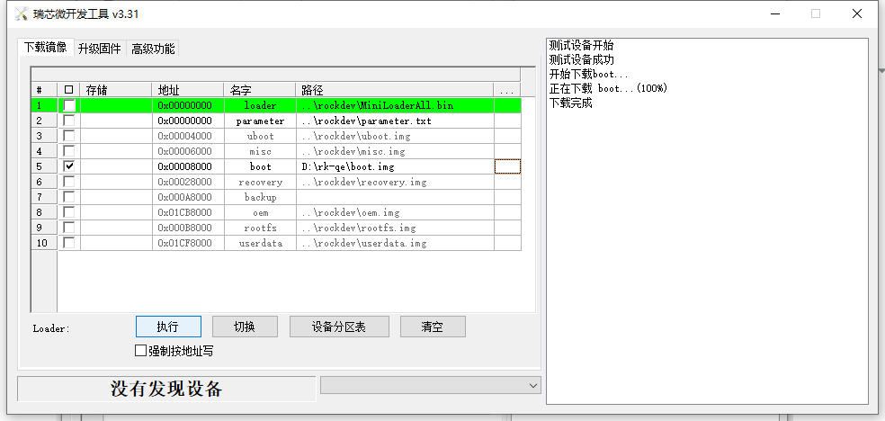
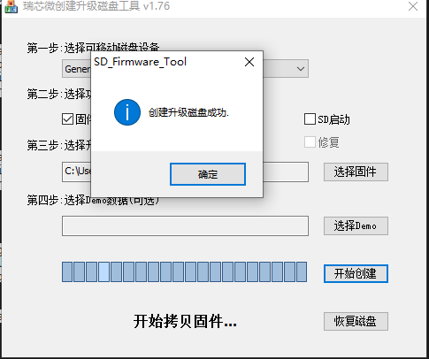

Forlinx Desktop24.04_User’s Manual_V1.1
Document classification: □ Top secret □ Secret □ Internal information ■ Open
Copyright
The copyright of this manual belongs to Baoding Folinx Embedded Technology Co., Ltd. Without the written permission of our company, no organizations or individuals have the right to copy, distribute, or reproduce any part of this manual in any form, and violators will be held legally responsible.
Forlinx adheres to copyrights of all graphics and texts used in all publications in original or license-free forms.
The drivers and utilities used for the components are subject to the copyrights of the respective manufacturers. The license conditions of the respective manufacturer are to be adhered to. Related license expenses for the operating system and applications should be calculated/declared separately by the related party or its representatives.
Overview
This manual is designed to help you quickly familiarize yourselves with the product, and understand the interface functions and testing methods. It primarily covers the testing of interface functions on the development board, the methods for flashing images, and troubleshooting procedures for common issues encountered in use. In the process of testing, some commands are annotated to facilitate the user’s understanding, mainly for practical use. Please refer to “OK3576-C_Forlinx Desktop22.04_User’s Compilation Manual” provided by Forlinx for kernel compilation, related application compilation methods and development environment setup.
There are total six parts:
Chapter 1. provides an overview of the product, briefly introducing the interface resources of the development board, the relevant driver paths in the kernel source code, supported flashing and booting methods, as well as explanations of key sections in the documentation;
Chapter 2. is the fast boot/startup of the product, which can use two ways of serial port login and network login;
Chapter 3. provides function test of product desktop and QT interface;
Chapter 4. is the command line operation of the product for functional testing;
Chapter 5. is the multimedia test of the product, including the playback test of the camera and the video hardware codec test;
Chapter 6. is the image update of the product, which mainly describes the method of updating the image to the storage device. Users can choose the corresponding flashing mode according to the actual situation.
A description of some of the symbols and formats in the manual:
Format |
Meaning |
|---|---|
Note |
Note or information that requires special attention, be sure to read carefully |
üìö |
Relevant notes on the test chapters |
Ô∏èüõ§Ô∏èÔ∏èÔ∏è |
Indicates the related path. |
Blue on gray |
Refers to commands entered at the command line(Manual input required). |
Black font on gray background |
Serial port output message after entering a command |
Bold black on gray background |
Key information in the serial port output message |
// |
Interpretation of input instructions or output information |
Username@Hostname |
forlinx@ok3588: Development board login account information; forlinx@ubuntu: Development environment Ubuntu account information Users can determine the operating environment for functional operations based on this information. |
Example: Check the loading status of the NXP AW9098 module driver:
forlinx@ok3576:~$ lsmod //View loaded module
Module Size Used by
moal 602112 0
mlan 466944 1 moal
forlinx @ ok3576: The user name is root and the host name is forlinx, which means that the root user is used to operate on the development board.
// : Interpretation of command operations or printed information without input;
lsmod：Blue font on a gray background indicates relevant commands that need to be entered manually;
moal 602112 0：The black font with gray background is the output information after the input command, and the bold font is the key information, which indicates that the NXP AW9098 module driver has been loaded.
Application Scope
This manual is mainly applicable to the Forlinx Desktop24.04 operating system on the Forlinx OK3576-C platform. Other platforms can also refer to it, but there will be differences between different platforms. Please make modifications according to the actual conditions.
Revision History
Date |
Manual Version |
SoM Version |
Carrier Board Version |
Revision History |
|---|---|---|---|---|
04/03/2025 |
V1.0 |
V1.1 |
V1.1 and Above |
Initial Version |
16/07/2025 |
V1.1 |
V1.2 and Above |
V1.1 and Above |
Adding 4G5G, WiFi, camera, and modifying the NIC name. |
1. OK3576 Development Board Description
1.1 OK3576 Development Board Description
RK3576 processor, based on ARM64 architecture, is known for its low power consumption and high performance. It integrates 4 Cortex-A53 and 4 Cortex-A72 cores, along with dedicated NEON co-processor and NPU for neural network processing. It’s widely used in various fields such as computers, smartphones, and digital multimedia devices.
The connection between SoM and the carrier board is board-to-board.
Note: The software manual no longer includes hardware parameter details. Prior to software development, please read the “OK3576-C_Hardware User’s Manual” located at “Hardware Information\User Manual” path. This manual clarifies product naming conventions and specific hardware configuration. It aids in understanding and utilizing the product effectively.
1.2 Introduction to Linux 6.1.84 System Software Resources
Device |
Location of driver source code in the kernel |
Device Name |
|---|---|---|
LCD Backlight Driver |
drivers/video/backlight/pwm_bl.c |
/sys/class/backlight |
USB Port |
drivers/usb/storage/ |
|
USB Mouse |
drivers/hid/usbhid/ |
/dev/input/mice |
Ethernet |
drivers/net/ethernet/stmicro/stmmac |
|
SD/micro TF card driver |
drivers/mmc/host/dw_mmc-rockchip.c |
/dev/block/mmcblk1pX |
EMMC Driver |
drivers/mmc/host/dw_mmc-rockchip.c |
/dev/block/mmcblk2pX |
OV13850 |
drivers/media/i2c/ov13855.c |
/dev/videoX |
LCD Controller |
drivers/gpu/drm/rockchip/rockchip_drm_vop.c |
|
MIPI CSI |
drivers/phy/rockchip/phy-rockchip-mipi-rx.c |
|
MIPI DSI |
drivers/phy/rockchip/phy-rockchip-inno-mipi-dphy.c |
|
LCD Touch Driver |
drivers/input/touchscreen/gt9xx/* drivers/input/touchscreen/edt-ft5x06.c |
/dev/input/eventX |
RTC Real Time Clock Driver |
drivers/rtc/rtc-rx8010.c drivers/rtc/rtc-pcf8563.c |
/dev/rtc0 |
serial port |
drivers/tty/serial/8250/8250_dw.c |
/dev/ttySX |
Key Driver |
drivers/input/keyboard/adc-keys.c |
/dev/input/eventX |
LED |
drivers/leds/leds-gpio.c |
|
I2S |
sound/soc/rockchip/rockchip_i2s.c |
|
Audio Driver |
sound/soc/codecs/nau8822.c |
/dev/snd/ |
PMIC |
drivers/mfd/rk806.c drivers/regulator/rk860x-regulator.c |
|
PCIE |
drivers/pci/controller/pcie-rockchip.c |
|
Watchdog |
drivers/watchdog/dw_wdt.c |
|
SPI |
drivers/spi/spi-rockchip.c |
|
PWM |
drivers/video/backlight/pwm_bl.c |
1.3 EMMC Memory Partition Table
The following table shows the eMMC memory partition information for the Linux operating system (calculated with a block size of 512bit):
Partition Index |
Name |
Offset / block |
Size/block |
content |
|---|---|---|---|---|
N/A |
security |
0x00000000 |
0x00004000 |
MiniLoaderAll.bin |
1 |
uboot |
0x00004000 |
0x00004000 |
uboot.img |
2 |
misc |
0x00006000 |
0x00002000 |
misc.img |
3 |
boot |
0x00008000 |
0x00020000 |
boot.img |
4 |
recovery |
0x00028000 |
0x00040000 |
recovery.img |
5 |
backup |
0x00068000 |
0x00010000 |
|
6 |
rootfs |
0x00078000 |
0x01c00000 |
rootfs.img |
7 |
oem |
0x01c78000 |
0x00040000 |
oem.img |
8 |
userdata |
0x01cb8000 |
grow |
userdata.img |
2. Fast Startup
2.1 Preparation Before Startup
OK3576 development board has two system login modes: Serial login and hardware preparation before system startup:
12V3A DC Power Cable
Debugging serial cable (Serial Login)
The debug serial port on the development board is a Type-C USB jack, so users can use a USB to Type-C cable to connect the development board to a PC and then check the board’s status.
Screen: Connect the screen according to the development board interface (optional if display is not needed).
2.2 Debugging Serial Driver Installation
The debugging serial port of the OK3576-C - C platform uses a Type - C interface. There is an on - board USB to UART chip, so there’s no need to purchase a USB to serial port debugging tool. It is extremely simple and convenient to use.
To install the driver, please use the driver package CP210x_VCP_Windows_XP_Vista.zip provided in the \ 3-Tools \ directory of the User Information.
Run CP210xVCPInstaller_x64.exe directly after unzipping is complete, to ensure the latest driver is installed, please click driver uninstall first, then driver install.
2.3 Serial Login
2.3.1 Serial Port Connection Settings
Description:
Serial port settings: baud rate 115200, data bit 8, stop bit 1, no parity bit, no flow control;
Software requirements: PC Windows system needs to install the super terminal software. Because the terminal software has many types, you can choose your familiar one.
In the following, take the putty terminal software as an example to introduce the serial port login method:
Step 1: Connect the serial port number of the computer—check the serial port number from the device manager (Based on the port actually recognized by the computer );

Step 2: Open and set up putty, then set the“ line according to the COM port of the computer used, baud rate 115200;

Step 3: After the setting, input the COM port used by the computer in Saved Sessions. The following figure takes COM3 as an example, save the settings, open the serial port again later, and click on the saved port number;
Step 4: Turn on the development board’s power switch. The serial port will print out the information output, including the username and password for Linux (no root privileges). If you need to use the root login, then the username and password are root and root, respectively.
input-event-daemon: Adding device: /dev/input/event9...
input-event-daemon: Start listening on 12 devices...
done
root@rk3576-buildroot:/# [ 37.424104] vbus5v0_typec0: disabling
[ 37.424151] vbus5v0_typec1: disabling
ok3576-buildroot login: forlinx
Password:
forlinx@ok3576-buildroot:~$
2.3.2 Serial Login Common Problems
If the computer does not have a serial port, we can use the USB to serial cable to connect with the development board. ( Using a USB to serial cable connection requires the matching driver).
It is better to use a good quality cable to avoid error codes.
2.4 Screen Switching
OK3576 supports multiple screen interfaces such as MIPI DSI, HDMI, DP, etc., and can display three screens simultaneously or differently. There is one way to control screen switching: Uboot menu dynamic control.
OK3576 contains 3 display controllers, i.e. 3 VP. It supports up to 3 screens simultaneously. The maximum resolution of VP0 is 4K; the maximum resolution of VP1 is 2560x1600; the maximum resolution of VP2 is 1920x1080.
2.5 System Shutdown
In general, the power can be turned off directly. If there is data storage, function use, or other operations, avoid turning off the power arbitrarily during operation to prevent irreversible damage to the file. In such cases, only re-flashing the firmware can resolve the issue. To ensure that data is not completely written, enter the sync command to complete data synchronization before turning off the power.
3. OK3576 Platform Interface Function Use and Test
This section explains how to use extended interfaces on the development board in desktop operating systems and QT interfaces. The provided testing program is for reference only; users should adjust it as needed.
3.1 Desktop Function Test
Forlinx Desktop system is a desktop operating system built by Forlinx on the basis of Ubuntu base. It is fully compatible with the Ubuntu 24.04 and supports apt-get. Compared with the traditional Linux system, it is easier to use.
The desktop is displayed as follows after the board is booted
3.1.1 Virtual Keyboard Test
In the desktop environment, a virtual keyboard is installed in the OK3576 Forlinx Ubuntu desktop environment to make it easier for customers to enter text without a physical keyboard. Click the icon in the upper left corner, select accessories, and click onboard.
3.1.2 Network Configuration Test
When OK3576 starts up, the default client startup NIC eth1, if you want to set it to static IP, you can make the following settings:
Click the network settings icon in the upper right corner:
If you want to configure eth0, click the “wired connection1” button. Set and configure in the Network option interface, click the “IPv4” tab, and configure in the “Manual” interface as follows.
Click save and restart the board to change to the static IP.
3.1.3 WIFI Test
OK3576 platform supports 2 x WIFI Bluetooth 2-in-1 modules: AW-CM358. WIFI supports 2.4 G and 5G bands.
Click on the network icon in the upper right corner and select Avallable networks.
Select the wifi you want to connect to, take forlinx-wlan as an example, click forlinx-wlan and enter the password.
Click “connect” and the connection is completed:
3.14 Bluetooth Test
This section demonstrates the use of Bluetooth for data transmission between a mobile phone and a development board.
Click on the Bluetooth icon in the upper right corner.
Click on adapters and select Always visible.
Turn on your phone and pair it with 3576 Bluetooth. The device name is ok3576.
Click on the connection, and the following interface will pop up when connecting.
Click “Confirm” to complete the connection.
Start transmitting data below.
1. Transfer files from mobile phone to board.
After selecting the file on the phone and transferring it to the board, the interface shown in the figure above will pop up. Click accept to receive the file, and after the transfer is completed, it will be displayed as shown in the figure below:

The transferred files will be placed in/home/worldinx/Downloads:
2. Transfer files from the board to the mobile phone:
First, click on the Bluetooth icon and select “Send File to Device”.
Enter the following interface:
Select a file to send: Select a file under/home/worldinx or a file owned by forlinx, otherwise the transfer will fail.
Here, select the file that was just transferred from the mobile phone to the board. Click the 1748056613406.jpg to display the following interface:
Select my device (helloword).
Wait for the transfer to complete and you will see the file on your phone.
3.15 Browser Test
OK3576 Ubuntu 24.04 supports Firefox browser by default, and you can use Firefox browser for search and other services.
The specific of operation is as follows:
Click the icon in the upper right corner.

Click Inetrnet and select firefox Web Broser.
Then you can surf the Internet normally.
4. OK3576 Command Line Tool Application and Test
The OK3576 platform has various built-in command line tools available to users.
4.1 System Information Query
To view kernel and cpu information, enter the following command
root@localhost:~# uname -a
Linux localhost.localdomain 6.1.84 #1 SMP Sat Dec 7 14:37:02 CST 2024 aarch64 aarch64 aarch64 GNU/Linux
View operating system information:
root@localhost:~# cat /etc/issue
Ubuntu 24.04.1 LTS \n \l
View environment variable information:
root@localhost:~# env
SHELL=/bin/bash
GST_V4L2_PREFERRED_FOURCC=NV12:YU12:NV16:YUY2
GST_VIDEO_CONVERT_PREFERRED_FORMAT=NV12:NV16:I420:YUY2
UMS_RO=0
GST_GL_PLATFORM=egl
COGL_DRIVER=gles2
PLAYBIN2_PREFERRED_VIDEOSINK=xvimagesink
GST_V4L2_USE_LIBV4L2=1
CREDENTIALS_DIRECTORY=/run/credentials/serial-getty@ttyFIQ0.service
UMS_MOUNTPOINT=/mnt/ums
GST_INSPECT_NO_COLORS=1
UMS_MOUNT=0
PULSE_HOME=/userdata/.pulse
WESTON_DRM_KEEP_RATIO=1
GST_DEBUG_NO_COLOR=1
PWD=/root
LOGNAME=root
XDG_SESSION_TYPE=tty
SYSTEMD_EXEC_PID=1377
UMS_SIZE=256M
HOME=/root
LANG=C.UTF-8
ADB_TCP_PORT=5555
LS_COLORS=
WESTON_FREEZE_DISPLAY=/tmp/.freeze_weston
INVOCATION_ID=01664f7458ab4731b8b2dcd002d6019b
GST_V4L2SRC_DEFAULT_DEVICE=/dev/video-camera0
AUTOVIDEOSINK_PREFERRED=xvimagesink
QT_XCB_GL_INTEGRATION=xcb_egl
LESSCLOSE=/usr/bin/lesspipe %s %s
XDG_SESSION_CLASS=user
TERM=vt220
LESSOPEN=| /usr/bin/lesspipe %s
USER=root
XSERVER_FREEZE_DISPLAY=/tmp/.freeze_xserver
UMS_FILE=/userdata/ums_shared.img
ADBD_SHELL=/bin/bash
GST_V4L2SRC_RK_DEVICES=_mainpath:_selfpath:_bypass:_scale
DISPLAY=:0
WESTON_DRM_MIRROR=1
UMS_FSTYPE=vfat
SHLVL=1
USB_FUNCS=adb
WESTON_DISABLE_ATOMIC=1
GST_GL_API=gles2
XDG_SESSION_ID=c2
XDG_RUNTIME_DIR=/run/user/0
DEBUGINFOD_URLS=https://debuginfod.ubuntu.com
XDG_DATA_DIRS=/usr/share/gnome:/usr/local/share:/usr/share:/var/lib/snapd/desktop
HUSHLOGIN=FALSE
PATH=/usr/local/sbin:/usr/local/bin:/usr/sbin:/usr/bin:/sbin:/bin:/usr/games:/usr/local/games:/snap/bin
QTWEBENGINE_CHROMIUM_FLAGS=--no-sandbox --disable-es3-gl-context --ignore-gpu-blacklist --ignore-gpu-blocklist --enable-accelerated-video-decode
DBUS_SESSION_BUS_ADDRESS=unix:path=/run/user/0/bus
MAIL=/var/mail/root
GST_V4L2SRC_MAX_RESOLUTION=3840x2160
GST_VIDEO_DECODER_QOS=0
_=/usr/bin/env
4.2 Frequency Test
Note: Quad-core A53 is cpu0, cpu1, cpu2, cpu3; Quad-core A72 is cpu5, cpu6, cpu7, cpu8. This process takes cpu0 as an example: the actual process of cpu1, cpu2, cpu3 will be changed at the same time; cpu4, cpu5, cpu6, cpu7 will not affect each other when operated individually.
All cpufreq governor types supported in the current kernel:
root@localhost:~# cat /sys/devices/system/cpu/cpu0/cpufreq/scaling_available_governors
conservative ondemand userspace powersave performance schedutil
The userspace indicates user mode, in which other users’ programs can adjust the CPU frequency.
View the current CPU supported frequency level.
root@localhost:~# cat /sys/devices/system/cpu/cpu0/cpufreq/scaling_available_frequencies
408000 600000 816000 1008000 1200000 1416000 1608000 1800000
Set to user mode and modify the frequency to 1800000：
root@localhost:~# echo userspace > /sys/devices/system/cpu/cpu0/cpufreq/scaling_governor
root@localhost:~# echo 1800000 > /sys/devices/system/cpu/cpu0/cpufreq/scaling_setspeed
View the modified current frequency:
root@localhost:~# cat /sys/devices/system/cpu/cpu0/cpufreq/cpuinfo_cur_freq
1800000
4.3 Temperature Test
View the temperature value:
root@localhost:~# cat /sys/class/thermal/thermal_zone0/temp
45307
The temperature value is 45.3°C.
4.4 DDR Test
root@localhost:~# apt-get update
root@localhost:~# apt-get install memtester
root@localhost:~# memtester 1024
memtester version 4.3.0 (64-bit)
Copyright (C) 2001-2012 Charles Cazabon.
Licensed under the GNU General Public License version 2 (only).
pagesize is 4096
pagesizemask is 0xfffffffffffff000
want 1024MB (1073741824 bytes)
got 1024MB (1073741824 bytes), trying mlock ...locked.
Loop 1/1:
Stuck Address : ok
Random Value : ok
Compare XOR : ok
Compare SUB : ok
Compare MUL : ok
Compare DIV : ok
Compare OR : ok
Compare AND : ok
Sequential Increment: ok
4.5 UART Test
The schematic diagram of the OK3576 platform carrier board indicates the presence of UART0, UART4, UART5, and UART6, totaling 4 serial ports. UART0 is designated as the debug port, UART4 as the Bluetooth port, and UART5 and UART6 as 485 ports.
UART |
Device Nodes |
Description |
|---|---|---|
UART0 |
Debugging serial port cannot be used directly for this test. |
|
UART4 |
/dev/ttyS4 |
It is used for Bluetooth and is not separately pinned out and can’t be directly used for this test. |
UART5 |
/dev/ttyS5 |
RS485_1 |
UART6 |
/dev/ttyS6 |
RS485_2 |
Testing will use two RS485 ports, UART5 and UART6. Before testing, ensure proper connection of the two RS485 interfaces: connect A to A and B to B. The two RS485 carrier board interfaces are as follows:

Receive end
root@localhost:/# cat /dev/ttyS5 & //Receive data, which can be received when ttyS6 sends data
Send
root@localhost:~# echo 111111 > /dev/ttyS6 ///Send data
Test effect:
root@localhost:/# cat /dev/ttyS5 & //Receive data, which can be received when ttyS6 sends data
root@localhost:~#echo 111111 > /dev/ttyS6 //Send data
4.6 ADC Test
OK3576-C development board provides 8 x ADC internally, with saradc2, saradc4, saradc5, saradc6, and saradc7 accessible at port P18. These channels can be tested by connecting jumpers to the adjacent variable resistors. The hardware diagram of the ADC pins is as follows. The current chip uses a 1.8V reference voltage corresponding to a maximum value of 4096 for the 12-bit ADC. Select saradc4 for testing and use jumper caps to connect pins 3 and 4 of port P18.

Test adjustable resistance value
root@localhost:~# cd /sys/bus/iio/devices/iio:device0
root@localhost:/sys/bus/iio/devices/iio:device0# cat in_voltage2_raw
3516
4.7 TF Test
Description: The SD card mount directory is /run/media/ and supports hot-swapping.
1. Insert the TF card into the TF card slot on the carrier board before powe-up . Then power up and start, run the command dmesg, and the terminal will have the following printed information:

2. Check the mount directory:
root@localhost:~# mount | grep "mmcblk1p1"
/dev/mmcblk1p1 on /run/media/mmcblk1p1 type fuseblk (rw,relatime,sync,user_id=0,group_id=0,allow_other,blksize=4096)
3. Write test:
root@localhost:~# dd if=/dev/zero of=/run/media/mmcblk1p1/test bs=1M count=500 conv=fsync
500+0 records in
500+0 records out
524288000 bytes (524 MB, 500 MiB) copied, 43.4478 s, 12.1 MB/s
4. Read test:
Note: To ensure the accuracy of the data, please restart the development board to test the reading speed.
root@localhost:~# dd if=/run/media/mmcblk1p1/test of=/dev/null bs=1M
500+0 records in
500+0 records out
524288000 bytes (524 MB, 500 MiB) copied, 11.3724 s, 46.1 MB/s
5. After using the TF card, uninstall it with umount before ejecting it.
root@localhost:~# umount /run/media/mmcblk1p1
Note: Plug and unplug the TF card after exiting the TF card mounting path.
4.8 EMMC Test
The OK3576 platform eMMC runs in HS400 mode 400MHz clock by default. The following is a simple eMMC read/write speed test: taking the read/write ext4 file system as an example.
Write test:
root@localhost:~# dd if=/dev/zero of=/test bs=1M count=500 conv=fsync
500+0 records in
500+0 records out
524288000 bytes (524 MB, 500 MiB) copied, 3.04244 s, 172 MB/s
Read test：
Note: To ensure the accuracy of the data, please restart the development board to test the reading speed.
root@localhost:~# dd if=/test of=/dev/null bs=1M
500+0 records in
500+0 records out
524288000 bytes (524 MB, 500 MiB) copied, 1.66193 s, 315 MB/s
4.9 USB Mouse Test
Connect the USB mouse to the USB interface of the OK3576 platform and use the dmesg command, the serial terminal prints the following information:
At this time, the arrow cursor appears on the screen, the mouse can work normally.
4.10 USB3.0
OK3576 supports 1 x USB 2.0 interface. You can connect a USB mouse, USB keyboard, USB flash drive ,and other devices on any of the on-board USB HOST ports, and it supports hot-swapping of the above devices. Demonstration with a mounting USB flash drive, the current USB flash drive test support up to 32G, but no test for 32G or above.
The terminal prints information about the USB flash drive, and since many types of USB flash drives exist, the information displayed may vary:
1. After the development board booting, connect the USB interface disk to the USB host interface of the development board. The default log print information is low, so there will be no print information. Use the dmesg command to view and get information about the USB flash drive.
2. Check the mount directory:
root@localhost:~# mount | grep "sda1"
/dev/sda1 on /run/media/sda1 type vfat (rw,relatime,fmask=0022,dmask=0022,codepage=936,iocharset=utf8,shortname=mixed,errors=remount-ro)
We can see the USB mount directory: /run/media/sda1
3. View the contents of the U disk (sda1 is based on the actual USB flash drive partition name).
root@localhost:~# ls -l /run/media/sda1/
total 8
drwxrwx--- 2 root disk 8192 Sep 23 2021 'System Volume Information'
-rwxrwx--- 1 root disk 0 Apr 25 09:25 test
4. Write test: Write speeds are limited by the specific storage device:
root@localhost:~# dd if=/dev/zero of=/run/media/sda1/test bs=1M count=500 conv=fsync
500+0 records in
500+0 records out
524288000 bytes (524 MB, 500 MiB) copied, 28.8323 s, 18.2 MB/s
5. Read test:
Note: To ensure the accuracy of the data, please restart the development board to test the reading speed.
root@localhost:~# dd if=/run/media/sda1/test of=/dev/null bs=1M
500+0 records in
500+0 records out
524288000 bytes (524 MB, 500 MiB) copied, 25.0096 s, 21.0 MB/s
6. After using a USB flash drive, before removing the USB flash drive, you need to use the “umount” command to unmount it.
root@localhost:~# umount /run/media/sda1
Note: Exit the USB flash drive mount path before plugging and unplugging the USB flash drive.
4.11 Ethernet Configuration
OK3576-C has 2 x Gigabit NIC on board, which are configured as dynamic IP by factory default (with a network connection).
To view current network connections in Network Manager:
root@localhost:~# nmcli con show
NAME UUID TYPE DEVICE
Wired Connection 1 84d6f13b-2f7d-4ef0-ae3a-3aab698a89fc ethernet eth0
lo a296ca22-67e7-48c9-b7b3-6e9a29814c1d loopback lo
Wired Connection 2 454b^Cc7-3596-4e3f-8cc1-8b4^Cf3b9e77 ethernet --
Here, the name of the network connection for eth0 in Network Manager is “Wired connection 1”.
Set the static configuration IP. For example, set the IP of eth0 as 172.20.0.114:
root@localhost:~# nmcli con mod 'Wired Connection 1' ipv4.method manual ipv4.addresses 172.20.0.114/24 ipv4.gateway 172.20.0.1 ipv4.dns 8.8.8.8 connection.autoconnect yes
Parameter |
Meaning |
|---|---|
con mod |
Used to specify the name of the network connection that requires a fixed IP |
ipv4.address |
Used to specify that the IPv4 address and subnet mask need to be fixed |
Ipv4.gateway |
Used to specify an Ipv4 gateway |
ipv4.dns |
Used to specify Ipv4 DNS |
connection.autoconnect |
Used to set up automatic connection |
After setting, the network connection is activated, and the configuration takes effect.
root@localhost:~#nmcli con up 'Wired Connection 1'
4.12 Play/Record Test
OK3576 provides the NAU88C22YG chip, 1 x standard 3.5mm audio jack, 1 x XH2.0-2P white socket P25 lead-out, and 1 x PH2.0-4P white socket P48 lead-out. It can drive an 8Ω speaker with a maximum output power of 1W. Before conducting playback tests, please connect the prepared headphones to the headphone jack or insert the speaker into the corresponding slot on the carrier board for testing.
4.12.1 Sound Card View
root@localhost:/#aplay -l //Check the sound card
**** List of PLAYBACK Hardware Devices ****
card 0: rockchiphdmi [rockchip-hdmi], device 0: rockchip-hdmi i2s-hifi-0 [rockchip-hdmi i2s-hifi-0]
Subdevices: 1/1
Subdevice #0: subdevice #0
card 1: rockchipnau8822 [rockchip-nau8822], device 0: dailink-multicodecs nau8822-hifi-0 [dailink-multicodecs nau8822-hifi-0]
Subdevices: 1/1
Subdevice #0: subdevice #0 Subdevice #0: subdevice #0 |
4.12.2 HDMI Playback Sound
root@localhost:/# <font style="color:#0000FF;">gst-play-1.0 /userdata/piano2-CoolEdit.mp3 --audiosink="alsasink device=plughw:0,0"</font>
4.12.3 Speaker Headphone Sound Play
root@localhost:/# amixer -c 1 // Query audio parameters
root@localhost:/# amixer -c 1 sset Headphone 63,63 // Set the headphone volume
root@localhost/# amixer -c 1 sset Speaker 63,63 // Set the speaker volume
root@localhost:/# gst-play-1.0 /userdata/piano2-CoolEdit.mp3 --audiosink="alsasink device=plughw:1,0"
Without inserting headphones, sound will be played from the speaker interface. Simply connect a speaker to hear the sound. Insert the headphones into the headphone interface, and the sound will be played through the it.
4.12.4 MIC Input
root@localhost:/# arecord -l
**** List of CAPTURE Hardware Devices ****
card 0: rockchipnau8822 [rockchip-nau8822], device 0: dailink-multicodecs nau8822-hifi-0 [dailink-multicodecs nau8822-hifi-0]
Subdevices: 1/1
Subdevice #0: subdevice #0
card 1: rockchiphdmi [rockchip-hdmi], device 0: rockchip-hdmi i2s-hifi-0 [rockchip-hdmi i2s-hifi-0]
Subdevices: 1/1
Subdevice #0: subdevice #0
root@localhost:/# arecord -D hw:1,0 -d 5 -f cd -t wav test1.wav // Record sound for 5 seconds and save it in WAV format
root@localhost:/# aplay -D plughw:1,0 test1.wav // Play the recorded sound using the speaker or headphone
4.13 LCD Backlight Adjustment
Backlight level range (0–255), maximum level 255, 0 indicating turn off. After connecting the mipi screen on the mipi dsi0, power up and start. Enter the system and enter the following command in the terminal to perform the backlight test.
1. View supported backlight models
root@localhost:/# ls /sys/class/backlight
backlight Display the currently supported backlight model |
The following is an example of dsi0
1. View the current screen backlight value:
root@localhost:/# cat /sys/class/backlight/backlight/brightness
200 //The current backlight value is 200
2. Backlight is off:
root@localhost:/# echo 0 > /sys/class/backlight/backlight/brightness
3. LCD backlight is on:
root@localhost:/# echo 125 > /sys/class/backlight/backlight/brightness
4.14 RTC Test
Note: Ensure button cell batteries are installed & voltage is normal.
RTC test: The main way to set the software and hardware time is by using the date and hwclock utilities. When performing the board power-down and power-up test, the software clock reads whether the RTC clock is synchronized or not.
Time setting
root@ok3576:/# date -s "2022-12-12 17:23:00" // Set the software time
Mon Dec 12 17:23:00 UTC 2022
root@ok3576:/# hwclock -wu // Synchronize the software time to the hardware time
root@ok3576:/# hwclock -r // Display the hardware time
Mon Dec 12 17:23:26 2022 0.000000 seconds
Then power down and power up the board, enter the system, and read the system time. After that, we can see that the time has synchronized.
root@rk3576:/# date
Mon Dec 12 17:23:50 UTC 2022
4.15 Watchdog Test
Watchdog is a function often used in embedded systems. The device node of watchdog in OK3576 is /dev/watchdog. This test provides two test procedures, and the user selects one test according to the actual situation.
Start the watchdog, set the reset time to 10s, and kick the dog regularly.
If usingfltest_watchdog, it turns on the watchdog and kick it, so the system does not reboot.
root@ok3576:/# fltest_watchdog
Watchdog Ticking Away!
When using ctrl+c to end the test program, kicking the dog is stopped, the watchdog is on, and the system is reset after 10s.
If you do not want to reset, enter the shutdown watchdog command within 10s after finishing the program:
root@ok3576:/# fltest_watchdog -d //Turn off the watchdog
Start watchdog, set reset time 10s, do not kick the watchdog.
Execute the command fltest_watchdogrestart, this command will turn on the watchdog but will not kick the watchdog and the system will reboot after 10s.
root@ok3576:/# fltest_watchdogrestart
4.16 Key Test
Use the fltest _ keytest command line tool to test the keys. At present, the fltest _ keytest supports the test of the four keys VOL + and VOL- on the carrier board, and the key codes are 115 and 114 respectively.
Execute the following command:
root@ok3576 :/# fltest_keytest
At this point, press the lift button in sequence, and the following can be output on the terminal:
key115 Presse // VOL+press
key115 Released // VOL+release
key114 Presse // VOL-press
key114 Released // VOL-release
4.17 UART485 Test
The schematic diagram of the OK3576 platform carrier board indicates the presence of UART0, UART4, UART5, and UART6, totaling 4 serial ports. UART0 is designated as the debug port, UART4 as the Bluetooth port, and UART5 and UART6 as 485 ports.
Testing will use two RS485 ports, UART5 and UART6. Before testing, ensure proper connection of the two RS485 interfaces: connect A to A and B to B. The two RS485 carrier board interfaces are as follows:
Use two terminals to log in to the board, one UART0 debug port and the other using SSH.
Debug terminal
Use two terminal sessions to log in to the development board. One session uses the UART0 debug port, and the other uses SSH to log in.
Debug terminal
SSH terminal
root@ok3576:~# cat /dev/ttyS6 // Receive data. You can receive data when data is sent from ttyS5.
123456
root@ok3576:~# echo 111111 > /dev/ttyS6 // Send data
4.18 WIFI Test
The network environment is different, so please set it according to the actual situation when you do this experiment.
OK3576 platform supports the AW-CM358 WIFI Bluetooth 2-in-1 module.
Note: Currently, the AP and STA modes cannot be used simultaneously on the OK3576 development board. If you want to use the AP mode, please turn off the corresponding AP first according to the configuration method of the AT mode.
4.18.1 STA Mode
This mode is used as a station to connect to the wireless network. In the following test, the router uses WPA encryption, the connected wifi hotspot name is: forlinx-wlan, and the password is: fl03123102650. Due to the different network environments, users should set up according to the actual situation when conducting this test:
Execute OK3576 _ sta. sh or enter directly.
nmcli dev wifi connect forlinx-wlan password fl03123102650 ifname wlan0
If the connection is successful, the following will be printed:
root@ok3576: OK3576_sta.sh
Device 'wlan0' successfully activated with '4277e39b-8043-483e-b1a2-968862d5850d'.
Turn off STA, that is, disconnect the current WiFi connection. You need to execute the following command.
nmcli device disconnect wlan0
4.18.2 AP Mode
The connection in STA mode needs to be closed before using AP mode.
First use the nmcli show command to see which AP node is currently attached.
root@ok3576:/# nmcli device
DEVICE TYPE STATE CONNECTION
eth0 ethernet connected Wired connection 1
wlan0 wifi connected forlinx-wlan
lo loopback connected (externally) lo
uap0 wifi disconnected --
wfd0 wifi disconnected --
p2p-dev-uap0 wifi-p2p disconnected --
p2p-dev-wfd0 wifi-p2p disconnected --
p2p-dev-wlan0 wifi-p2p disconnected --
eth1 ethernet unavailable --
can0 can unmanaged --
can1 can unmanaged --
You can see that the currently connected node is forlinx-wlan. Turn off forlinx-wlan.
root@ok3576:/# nmcli connection delete forlinx-wlan
Connection 'forlinx-wlan' (4277e39b-8043-483e-b1a2-968862d5850d) successfully deleted.
Repeat until no AP is available.
Use the OK3576 _ AP. sh to create an AP hotspot named OK3576-test-AP.
root@ok3576:/# OK3576_AP.sh
Error: unknown connection 'OK3576-test-AP'.
Error: cannot delete unknown connection(s): 'OK3576-test-AP'.
Warning: Extension MASQUERADE revision 0 not supported, missing kernel module?
iptables v1.8.10 (nf_tables): CHAIN_ADD failed (No such file or directory): chain POSTROUTING
Chain 'MASQUERADE' does not exist. Switching iptables version...
update-alternatives: using /usr/sbin/iptables-legacy to provide /usr/sbin/iptables (iptables) in manual mode
net.ipv4.ip_forward = 1
Connection 'OK3576-test-AP' (06d788bd-be8c-4005-9670-c82d038dadf7) successfully added.
Connection successfully activated (D-Bus active path: /org/freedesktop/NetworkManager/ActiveConnection/13)
The network provider here is eth0, and the you can modify the/usr/bin/OK3576 _ AP. sh to change the relevant settings.
Note: This setting is static, so if the setting is successful, the development board will turn on the AP mode directly. However, this AP does not have a network, so if the you want to have a network AP every time he boots up, he needs to add the following command to the boot script.
iptables -t nat -A POSTROUTING -o eth0 -j MASQUERADE`
For example, add to/etc/rcS. D/S11-wifibt. sh.
#!/bin/bash
insmod /data/mlan.ko
insmod /data/moal.ko cal_data_cfg=none fw_name=sdiouart8987_combo_v0.bin sta_namm
e=wlan cfg80211_wext=12
sleep 5
iptables -t nat -A POSTROUTING -o eth0 -j MASQUERADE
The network that automatically creates IP and uses eth0 can be realized every restart.
4.19 Bluetooth Test
The AW-CM358 module on the OK3576 carrier board integrates Bluetooth. This section demonstrates data transfer via Bluetooth between a cell phone and the development board. It can support Bluetooth up to 5.0. Note that before testing Bluetooth, you need to follow the instructions in the previous section “WiFi Test” to load the WiFi module and firmware.
1. Bluetooth Configuration
root@ok3576:/# bluetoothctl // Open the BlueZ Bluetooth tool
[NEW] Controller B8:4D:43:12:43:6F forlinx [default]
Agent registered
[bluetooth]# power on // Turn on the Bluetooth device
Changing power on succeeded
[bluetooth]# pairable on // Set it to pairing mode
Changing pairable on succeeded
[bluetooth]# discoverable on // Set it to discoverable mode
[bluetooth]# [ 1547.589820] Bluetooth: hu ffffffc066059c00 retransmitting 1 pkts
Changing discoverable on succeeded
[CHG] Controller B8:4D:43:12:43:6F Discoverable: yes
[bluetooth]# agent on // Start the agent
Agent is already registered
[bluetooth]# default-agent // Set the current agent as the default
Default agent request successful
[bluetooth]# scan on // Turn on scanning to search for devices to connect
[CHG] Device 6C:2A:10:D8:4F:18 RSSI: 0xffffffb1 (-79)
[DEL] Device 25:B1:38:2B:50:3D 25-B1-38-2B-50-3D
[NEW] Device 25:B1:38:2B:50:3D 25-B1-38-2B-50-3D
[CHG] Device 6C:2A:10:D8:4F:18 RSSI: 0xffffffba (-70)
[CHG] Device 6C:2A:10:D8:4F:18 RSSI: 0xffffffae (-82)
[NEW] Device 3C:13:5A:A1:C8:B5 Redmi K60
[bluetooth]# pair 3C:13:5A:A1:C8:B5 // Pair with the MAC address of the device to connect
Attempting to pair with 3C:13:5A:A1:C8:B5
[CHG] Device 3C:13:5A:A1:C8:B5 Connected: yes
Request confirmation
[agent] Confirm passkey 628193 (yes/no): yes
[CHG] Device 3C:13:5A:A1:C8:B5 Bonded: yes
[CHG] Device 3C:13:5A:A1:C8:B5 Modalias: bluetooth:v038Fp1200d1436
[CHG] Device 3C:13:5A:A1:C8:B5 UUIDs: 00001105-0000-1000-8000-00805f9b34fb
[CHG] Device 3C:13:5A:A1:C8:B5 UUIDs: 0000110a-0000-1000-8000-00805f9b34fb
[CHG] Device 3C:13:5A:A1:C8:B5 UUIDs: 0000110c-0000-1000-8000-00805f9b34fb
[CHG] Device 3C:13:5A:A1:C8:B5 UUIDs: 00001112-0000-1000-8000-00805f9b34fb
[CHG] Device 3C:13:5A:A1:C8:B5 UUIDs: 00001115-0000-1000-8000-00805f9b34fb
[CHG] Device 3C:13:5A:A1:C8:B5 UUIDs: 00001116-0000-1000-8000-00805f9b34fb
[CHG] Device 3C:13:5A:A1:C8:B5 UUIDs: 0000111f-0000-1000-8000-00805f9b34fb
[CHG] Device 3C:13:5A:A1:C8:B5 UUIDs: 0000112f-0000-1000-8000-00805f9b34fb
[CHG] Device 3C:13:5A:A1:C8:B5 UUIDs: 00001132-0000-1000-8000-00805f9b34fb
[CHG] Device 3C:13:5A:A1:C8:B5 UUIDs: 00001200-0000-1000-8000-00805f9b34fb
[CHG] Device 3C:13:5A:A1:C8:B5 UUIDs: 00001800-0000-1000-8000-00805f9b34fb
[CHG] Device 3C:13:5A:A1:C8:B5 UUIDs: 00001801-0000-1000-8000-00805f9b34fb
[CHG] Device 3C:13:5A:A1:C8:B5 UUIDs: 0000fcc0-0000-1000-8000-00805f9b34fb
[CHG] Device 3C:13:5A:A1:C8:B5 UUIDs: 0000fcc0-36a2-11ea-8467-484d7e99a198
[CHG] Device 3C:13:5A:A1:C8:B5 UUIDs: 0000fdaa-0000-1000-8000-00805f9b34fb
[CHG] Device 3C:13:5A:A1:C8:B5 UUIDs: 98b97136-36a2-11ea-8467-484d7e99a198
[CHG] Device 3C:13:5A:A1:C8:B5 UUIDs: ada499be-27d6-11ec-9427-0a80ff2603de
[CHG] Device 3C:13:5A:A1:C8:B5 ServicesResolved: yes
[CHG] Device 3C:13:5A:A1:C8:B5 Paired: yes //Enter yes
Pairing successful
[bluetooth]# scan off //Turn off scanning
Discovery stopped
[CHG] Device 35:A5:1D:93:B8:E9 RSSI is nil
[DEL] Device 35:A5:1D:93:B8:E9 35-A5-1D-93-B8-E9
[CHG] Device 35:06:37:F3:97:9D RSSI is nil
[DEL] Device 35:06:37:F3:97:9D 35-06-37-F3-97-9D
[CHG] Controller 20:0B:74:35:2F:5A Discovering: no
[bluetooth]# connect 3C:13:5A:A1:C8:B5 //Connect the mac of the device you want to connect
Attempting to connect to 3C:13:5A:A1:C8:B5
[CHG] Device 3C:13:5A:A1:C8:B5 Connected: yes
[NEW] Endpoint /org/bluez/hci0/dev_3C_13_5A_A1_C8_B5/sep1
[NEW] Transport /org/bluez/hci0/dev_3C_13_5A_A1_C8_B5/sep1/fd0
Connection successful
[DEL] Device 63:35:1D:74:AA:A1 63-35-1D-74-AA-A1
[Redmi K60]# [ 4619.269366] input: Redmi K60 (AVRCP) as /devices/virtual/input/input11
[NEW] Player /org/bluez/hci0/dev_3C_13_5A_A1_C8_B5/player0 [default]
[Redmi K60]# [01:16:58.016] event11 - Redmi K60 (AVRCP): is tagged by udev as: Keyboard
[01:16:58.016] event11 - Redmi K60 (AVRCP): device is a keyboard
[01:16:58.017] libinput: configuring device "Redmi K60 (AVRCP)".
[01:16:58.017] associating input device event11 with output DSI-1 (none by udev)
[CHG] Device 3C:13:5A:A1:C8:B5 ServicesResolved: yes
[CHG] Player /org/bluez/hci0/dev_3C_13_5A_A1_C8_B5/player0 Repeat: off
[CHG] Player /org/bluez/hci0/dev_3C_13_5A_A1_C8_B5/player0 Shuffle: off
[CHG] Player /org/bluez/hci0/dev_3C_13_5A_A1_C8_B5/player0 Type: Audio
[CHG] Player /org/bluez/hci0/dev_3C_13_5A_A1_C8_B5/player0 Subtype: Audio Book
[CHG] Player /org/bluez/hci0/dev_3C_13_5A_A1_C8_B5/player0 Status: stopped
[CHG] Player /org/bluez/hci0/dev_3C_13_5A_A1_C8_B5/player0 Name: Music Player
[CHG] Transport /org/bluez/hci0/dev_3C_13_5A_A1_C8_B5/sep1/fd0 Volume: 0x0055 (85)
[CHG] Player /org/bluez/hci0/dev_3C_13_5A_A1_C8_B5/player0 Status: paused
[CHG] Player /org/bluez/hci0/dev_3C_13_5A_A1_C8_B5/player0 Track Key: Title
[CHG] Player /org/bluez/hci0/dev_3C_13_5A_A1_C8_B5/player0 Track Value: unknow
[CHG] Player /org/bluez/hci0/dev_3C_13_5A_A1_C8_B5/player0 Track Key: TrackNumber
[CHG] Player /org/bluez/hci0/dev_3C_13_5A_A1_C8_B5/player0 Track Value: 0x00000000 (0)
[CHG] Player /org/bluez/hci0/dev_3C_13_5A_A1_C8_B5/player0 Track Key: NumberOfTracks
[CHG] Player /org/bluez/hci0/dev_3C_13_5A_A1_C8_B5/player0 Track Value: 0x00000000 (0)
[CHG] Player /org/bluez/hci0/dev_3C_13_5A_A1_C8_B5/player0 Track Key: Duration
[CHG] Player /org/bluez/hci0/dev_3C_13_5A_A1_C8_B5/player0 Track Value: 0x00000000 (0)
[CHG] Player /org/bluez/hci0/dev_3C_13_5A_A1_C8_B5/player0 Track Key: Album
[CHG] Player /org/bluez/hci0/dev_3C_13_5A_A1_C8_B5/player0 Track Value: unknow
[CHG] Player /org/bluez/hci0/dev_3C_13_5A_A1_C8_B5/player0 Track Key: Artist
[CHG] Player /org/bluez/hci0/dev_3C_13_5A_A1_C8_B5/player0 Track Value: unknow
[CHG] Player /org/bluez/hci0/dev_3C_13_5A_A1_C8_B5/player0 Track Key: Genre
[CHG] Player /org/bluez/hci0/dev_3C_13_5A_A1_C8_B5/player0 Track Value:
[CHG] Player /org/bluez/hci0/dev_3C_13_5A_A1_C8_B5/player0 Position: 0x00000000 (0)
[DEL] Device 44:03:8E:A3:79:07 44-03-8E-A3-79-07
[CHG] Transport /org/bluez/hci0/dev_3C_13_5A_A1_C8_B5/sep1/fd0 Volume: 0x007f (127)
[Redmi K60]# W: [pulseaudio] module-loopback.c: Configured latency of 200.00 ms is smaller than minimum latency, using minimum instead
W: [pulseaudio] module-loopback.c: Cannot set requested sink latency of 35.20 ms, adjusting to 39.91 ms
W: [pulseaudio] module-loopback.c: Cannot set requested source latency of 66.67 ms, adjusting to 250.00 ms
[CHG] Transport /org/bluez/hci0/dev_3C_13_5A_A1_C8_B5/sep1/fd0 Volume: 0x0055 (85)
[DEL] Device D1:B1:46:9D:F9:C6 Mi Smart Band 4
[DEL] Device 64:F7:FF:12:32:2A 64-F7-FF-12-32-2A
[DEL] Device 7E:84:48:D0:B8:CA 7E-84-48-D0-B8-CA
[DEL] Device 6D:8B:09:A7:89:8F 6D-8B-09-A7-89-8F
[DEL] Device 46:CB:AA:35:D6:01 46-CB-AA-35-D6-01
[DEL] Device 5E:FB:3A:DF:A7:BC 5E-FB-3A-DF-A7-BC
[DEL] Device 66:56:59:68:0F:06 66-56-59-68-0F-06
[DEL] Device BE:F4:D4:08:7E:D6 BE-F4-D4-08-7E-D6
[DEL] Device 47:70:48:8E:72:9E 47-70-48-8E-72-9E
[DEL] Device 76:1F:77:CF:A9:E9 76-1F-77-CF-A9-E9
[DEL] Device 76:36:16:6E:CF:B6 76-36-16-6E-CF-B6
[DEL] Device 6C:2A:10:D8:4F:18 6C-2A-10-D8-4F-18
[CHG] Transport /org/bluez/hci0/dev_3C_13_5A_A1_C8_B5/sep1/fd0 Volume: 0x007f (127)
Authorize service
[agent] Authorize service 00001108-0000-1000-8000-00805f9b34fb (yes/no): [DEL] Device D4:BB:E6:8E:BB:B0 mywifi
[agent] Authorize service 00001108-0000-1000-8000-00805f9b34fb (yes/no): [DEL] Device 4C:50:77:0F:3B:2C huawei111
[agent] Authorize service 00001108-0000-1000-8000-00805f9b34fb (yes/no): [DEL] Device 24:DA:33:C9:10:86 CON
[agent] Authorize service 00001108-0000-1000-8000-00805f9b34fb (yes/no): yes //输入yes
When the development board is connected to the smartphone, it appears as a Bluetooth headset.
After successful connection, the files on the mobile phone can be shared to the development board through Bluetooth.
The received files are in the /tmp directory.
At the same time, we can also send the files on the development board to the mobile phone.
4.20 CAN Test
The OK3576-C platform has two CAN bus interfaces and connection methods: Connection of the H terminal of CAN to other CAN devices; connection of the L terminal of CAN to other CAN devices.
Short-circuit CAN0 and CAN1, as shown：

Execute the following command in the development board terminal:
1. View CAN network devices
root@ok3576:/#ifconfig -a
can0 Link encap:UNSPEC HWaddr 00-00-00-00-00-00-00-00-00-00-00-00-00-00-00-00
NOARP MTU:16 Metric:1
RX packets:0 errors:0 dropped:0 overruns:0 frame:0
TX packets:0 errors:0 dropped:0 overruns:0 carrier:0
collisions:0 txqueuelen:10
RX bytes:0 (0.0 B) TX bytes:0 (0.0 B)
Interrupt:62
can1 Link encap:UNSPEC HWaddr 00-00-00-00-00-00-00-00-00-00-00-00-00-00-00-00
NOARP MTU:16 Metric:1
RX packets:0 errors:0 dropped:0 overruns:0 frame:0
TX packets:0 errors:0 dropped:0 overruns:0 carrier:0
collisions:0 txqueuelen:10
RX bytes:0 (0.0 B) TX bytes:0 (0.0 B)
Interrupt:63
eth0 Link encap:Ethernet HWaddr 36:6B:4A:1E:01:49
inet addr:172.20.0.117 Bcast:0.0.0.0 Mask:255.255.255.0
UP BROADCAST MULTICAST MTU:1500 Metric:1
RX packets:0 errors:0 dropped:0 overruns:0 frame:0
TX packets:0 errors:0 dropped:0 overruns:0 carrier:0
collisions:0 txqueuelen:1000
RX bytes:0 (0.0 B) TX bytes:0 (0.0 B)
Interrupt:64
eth1 Link encap:Ethernet HWaddr 3A:6B:4A:1E:01:49
UP BROADCAST MULTICAST MTU:1500 Metric:1
RX packets:0 errors:0 dropped:0 overruns:0 frame:0
TX packets:0 errors:0 dropped:0 overruns:0 carrier:0
collisions:0 txqueuelen:1000
RX bytes:0 (0.0 B) TX bytes:0 (0.0 B)
Interrupt:66
lo Link encap:Local Loopback
inet addr:127.0.0.1 Mask:255.0.0.0
inet6 addr: ::1/128 Scope:Host
UP LOOPBACK RUNNING MTU:65536 Metric:1
RX packets:64 errors:0 dropped:0 overruns:0 frame:0
TX packets:64 errors:0 dropped:0 overruns:0 carrier:0
collisions:0 txqueuelen:1000
RX bytes:3824 (3.7 KiB) TX bytes:3824 (3.7 KiB)
2. Set CAN0 and CAN1 parameters
root@ok3576:/# ip link set can0 down
root@ok3576:/# ip link set can0 type can bitrate 1000000 sample-point 0.8 dbitrate 2000000 sample-point 0.8 fd on
root@ok3576:/# ip link set can1 down
root@ok3576:/# ip link set can1 type can bitrate 1000000 sample-point 0.8 dbitrate 2000000 sample-point 0.8 fd on
Set the baud rate of the can0 and can1 devices to 500000
3. Open the can device
root@ok3576:/#ip link set can0 up
root@ok3576:/# echo 4096 > /sys/class/net/can0/tx_queue_len
root@ok3576:/# ip link set can1 up
root@ok3576:/#echo 4096 > /sys/class/net/can1/tx_queue_len
4. Client sending data; Server receiving data
The can0 device acts as a server (the server first executes the following command).
root@ok3576:/# candump can0&
can1 device as a client (client sends data)
root@ok3576:/# cansend can1 1F334455#1122334455667788
4.21 4G/5G
Description:
When using the IoT card to test, the module firmware version needs to be confirmed, the low firmware version is not supported, and EM05 needs to be upgraded;
Some IoT cards require a dedicated account number and password when dialing, and users adjust the commands according to the situation;
The quectelCM –help command allows you to see the meaning of the relevant parameters;
For switching between 4G and 5G, it is necessary to use the S2 switch on the carrier board
OK3576 supports 4G module EM05 and 5G module RM500U. Connect the 4G/5G module to the development board before powering on, insert the SIM card, and start the development board.
1. After connecting the module and powering up the board and module, check the USB status through the lsusb command.
root@ok3576:/#lsusb
Bus 002 Device 002: ID 04b4:6500
Bus 001 Device 001: ID 1d6b:0002
Bus 001 Device 004: ID 0000:3825
Bus 001 Device 003: ID 09da:2268
Bus 001 Device 002: ID 04b4:6502
Bus 002 Device 003: ID 0781:5591
Bus 002 Device 001: ID 1d6b:0003
**Bus 001 Device 005: ID 2c7c:0125 //EM05 VID and PID
View device node status under /dev
root@ok3576:/# ls /dev/ttyUSB*
/dev/ttyUSB0 /dev/ttyUSB1 /dev/ttyUSB2 /dev/ttyUSB3
2. After the equipment is successfully identified, the dial-up Internet access test can be conducted. fltest_quectel.sh calls quectelCM, see /usr/bin/fltest_quectel.sh for specific commands
root@ok3576:/# quectelCM &
Printing information is as follows:
[04-23_05:32:27:029]Quectel_QConnectManager_Linux_V1.6.0.24
[04-23_05:32:27:030] Find /sys/bus/usb/devices/1-1.4 idVendor=0x2c7c idProduct=0x125, bus=0x001, dev=0x005
[04-23_05:32:27:030] Auto find qmichannel = /dev/cdc-wdm0
[04-23_05:32:27:030] Auto find usbnet_adapter = wwan0
[04-23_05:32:27:030] netcard driver = qmi_wwan, driver version = 6.1.57
[04-23_05:32:27:031] Modem works in QMI mode
[04-23_05:32:27:034] cdc_wdm_fd = 7
[04-23_05:32:27:115] Get clientWDS = 7
[04-23_05:32:27:147] Get clientDMS = 1
[04-23_05:32:27:179] Get clientNAS = 2
[04-23_05:32:27:210] Get clientUIM = 1
[04-23_05:32:27:243] Get clientWDA = 1
[04-23_05:32:27:275] requestBaseBandVersion EM05CEFCR06A04M1G_ND
[04-23_05:32:27:403] requestGetSIMStatus SIMStatus: SIM_READY
[04-23_05:32:27:435] requestGetProfile[1] cmnet///0/IPV4V6
[04-23_05:32:27:467] requestRegistrationState2 MCC: 460, MNC: 0, PS: Attached, DataCap: LTE
[04-23_05:32:27:499] requestQueryDataCall IPv4ConnectionStatus: DISCONNECTED
[04-23_05:32:27:499] ifconfig wwan0 0.0.0.0
[04-23_05:32:27:507] ifconfig wwan0 down
[04-23_05:32:27:563] requestSetupDataCall WdsConnectionIPv4Handle: 0x86da5b80
[04-23_05:32:27:691] ifconfig wwan0 up
[04-23_05:32:27:697] busybox udhcpc -f -n -q -t 5 -i wwan0
udhcpc: started, v1.36.0
udhcpc: broadcasting discover
udhcpc: broadcasting select for 10.19.76.92, server 10.19.76.93
udhcpc: lease of 10.19.76.92 obtained from 10.19.76.93, lease time 7200
[04-23_05:32:27:747] deleting routers
[04-23_05:32:27:768] adding dns 111.11.1.3
[04-23_05:32:27:768] adding dns 111.11.11.3
Ping domain test.
root@ok3576:/# ping -I wwan0 www.forlinx.com -c 3 //指定wwan0网卡ping3次
PING s-526319.gotocdn.com (211.149.226.120) from 10.19.76.92 wwan0: 56(84) bytes of data.
64 bytes from 211.149.226.120 (211.149.226.120): icmp_seq=1 ttl=48 time=79.2 ms
64 bytes from 211.149.226.120 (211.149.226.120): icmp_seq=2 ttl=48 time=64.1 ms
64 bytes from 211.149.226.120 (211.149.226.120): icmp_seq=3 ttl=48 time=62.6 ms
--- s-526319.gotocdn.com ping statistics ---
3 packets transmitted, 3 received, 0% packet loss, time 2003ms
rtt min/avg/max/mdev = 62.606/68.624/79.164/7.477 ms
5. OK3576 Platform Multimedia Test
Some application layer software for audio and video on the OK3576 platform uses Gstreamer, which supports hardware codecs. All examples in this section based on the GStreamer command line form.
5.1 Audio and Video Playback
5.1.1 Playing Audio and Video with Gst-play
Gplay is an audio/video player based on GStreamer that can automatically select the right plugin for audio/video play according to the hardware, and it is easy to run.
root@localhost:~# gst-play-1.0 /userdata/1080p_60fps_h265-30S.mp4
Press 'k' to see a list of keyboard shortcuts.
Now playing /userdata/media/1080p_60fps_h265-30S.mp4
Redistribute latency...
Redistribute latency...
Redistribute latency...
0:00:30.0 / 0:00:30.0
Reached end of play list.
5.1.2 Playing Video with Gst-launch
root@localhost:~# gst-launch-1.0 filesrc location= /userdata/1080p_60fps_h265-30S.mp4 ! qtdemux ! h265parse ! mppvideodec ! autovideosink
Setting pipeline to PAUSED ...
Pipeline is PREROLLING ...
Redistribute latency...
Redistribute latency...
Pipeline is PREROLLED ...
Prerolled, waiting for async message to finish...
Setting pipeline to PLAYING ...
Redistribute latency...
New clock: GstSystemClock
^Chandling interrupt. (10.2 %)
Interrupt: Stopping pipeline ...
Execution ended after 0:00:03.136669679
Setting pipeline to NULL ...
Freeing pipeline ...
5.2 Video Hardware Encoding
5.2.1 Video Hardware Encoding H.264
root@localhost:~# gst-launch-1.0 videotestsrc num-buffers=600 ! video/x-raw,framerate=30/1,width=7680,height=4320 ! mpph264enc ! h264parse ! mp4mux ! filesink location=test.mp4
Setting pipeline to PAUSED ...
Pipeline is PREROLLING ...
Redistribute latency...
Pipeline is PREROLLED ...
Prerolled, waiting for async message to finish...
Setting pipeline to PLAYING ...
Redistribute latency...
New clock: GstSystemClock
^Chandling interrupt. (6.0 %)
Interrupt: Stopping pipeline ...
Execution ended after 0:00:02.932071557
Setting pipeline to NULL ...
Freeing pipeline ...
5.2.2 Video Hardware Encoding H.265
root@localhost:~# gst-launch-1.0 videotestsrc num-buffers=600 ! video/x-raw,framerate=60/1,width=3840,height=2160 ! mpph265enc ! h265parse ! mp4mux ! filesink location=test.mp4
Setting pipeline to PAUSED ...
Pipeline is PREROLLING ...
Redistribute latency...
Pipeline is PREROLLED ...
Prerolled, waiting for async message to finish...
Setting pipeline to PLAYING ...
Redistribute latency...
New clock: GstSystemClock
^Chandling interrupt. (7.2 %)
Interrupt: Stopping pipeline ...
Execution ended after 0:00:01.410982596
Setting pipeline to NULL ...
Freeing pipeline ...
5.2.3 JPEG Hardware Encoding
root@localhost:~# gst-launch-1.0 videotestsrc num-buffers=20 ! video/x-raw,framerate=60/1,width=3840,height=2160 ! mpph265enc ! h265parse ! mp4mux ! filesink location=test.jpeg
Setting pipeline to PAUSED ...
Pipeline is PREROLLING ...
Redistribute latency...
Pipeline is PREROLLED ...
Prerolled, waiting for async message to finish...
Setting pipeline to PLAYING ...
Redistribute latency...
New clock: GstSystemClock
Got EOS from element "pipeline0".
Execution ended after 0:00:00.588552391
Setting pipeline to NULL ...
Freeing pipeline ...
5.3 Video Hardware Decoding
OK3576 supports hardware decoding for H.264, H.265, VP8, and VP9 video formats. The H.264 decoder supports 8K at 30fps, while the H.265 decoder supports 8K at 60fps.
OK3588 uses the mppvideodec component for hardware video decoding, and its output formats are NV12, I420, and YV12.
5.3.1 Decoding and Playing H.264 Format Video
root@localhost:~# gst-launch-1.0 filesrc location=/userdata/4k_60fps_h264-30S.mp4 ! qtdemux ! h264parse ! mppvideodec ! autovideosink
Setting pipeline to PAUSED ...
Pipeline is PREROLLING ...
Redistribute latency...
Redistribute latency...
Pipeline is PREROLLED ...
Prerolled, waiting for async message to finish...
Setting pipeline to PLAYING ...
Redistribute latency...
New clock: GstSystemClock
^Chandling interrupt. (6.9 %)
Interrupt: Stopping pipeline ...
Execution ended after 0:00:02.112765294
Setting pipeline to NULL ...
Freeing pipeline ...
5.3.2 Decoding and Playing H.265 Format Video
root@localhost:~# gst-launch-1.0 filesrc location=/userdata/4k_60fps_h265-30S.mp4 ! qtdemux ! h265parse ! mppvideodec ! autovideosink
Setting pipeline to PAUSED ...
Pipeline is PREROLLING ...
Redistribute latency...
Redistribute latency...
Pipeline is PREROLLED ...0 %)
Prerolled, waiting for async message to finish...
Setting pipeline to PLAYING ...
Redistribute latency...
New clock: GstSystemClock
^Chandling interrupt. (54.8 %)
Interrupt: Stopping pipeline ...
Execution ended after 0:00:16.586469167
Setting pipeline to NULL ...
5.4 Camera Test
OK3576 supports OV13855 MIPI camera and UVC camera. First, test the UVC camera with Logitech C270 process. Insert the USB camera into the development board, and the UVC driver will be installed automatically.
5.4.1 UVC Camera Test
5.4.1.1 Camera Recognition Detection and Format Support Queries
Camera Recognition Detection
root@ok3576-ubuntu24:/# v4l2-ctl --list-devices //View the UVC camera device node, and see that/dev/video20 & 21 is the USB camera node
UVC Camera (046d:0825) (usb-xhci-hcd.0.auto-1.1):
/dev/video20
/dev/video21
/dev/media2
Format Support Queries
root@ok3576-ubuntu24:/# v4l2-ctl --list-formats-ext -d /dev/video20 //View formats supported by the camera
ioctl: VIDIOC_ENUM_FMT
Type: Video Capture
[0]: 'YUYV' (YUYV 4:2:2)
Size: Discrete 640x480
Interval: Discrete 0.033s (30.000 fps)
Interval: Discrete 0.040s (25.000 fps)
Interval: Discrete 0.050s (20.000 fps)
Interval: Discrete 0.067s (15.000 fps)
Interval: Discrete 0.100s (10.000 fps)
Interval: Discrete 0.200s (5.000 fps)
Size: Discrete 160x120
Interval: Discrete 0.033s (30.000 fps)
Interval: Discrete 0.040s (25.000 fps)
Interval: Discrete 0.050s (20.000 fps)
Interval: Discrete 0.067s (15.000 fps)
Interval: Discrete 0.100s (10.000 fps)
Interval: Discrete 0.200s (5.000 fps)
Size: Discrete 176x144
Interval: Discrete 0.033s (30.000 fps)
Interval: Discrete 0.040s (25.000 fps)
Interval: Discrete 0.050s (20.000 fps)
Interval: Discrete 0.067s (15.000 fps)
Interval: Discrete 0.100s (10.000 fps)
Interval: Discrete 0.200s (5.000 fps)
Size: Discrete 320x176
Interval: Discrete 0.033s (30.000 fps)
Interval: Discrete 0.040s (25.000 fps)
Interval: Discrete 0.050s (20.000 fps)
Interval: Discrete 0.067s (15.000 fps)
Interval: Discrete 0.100s (10.000 fps)
Interval: Discrete 0.200s (5.000 fps)
5.4.1.2 Camera Capture Format Queries and Modifications
Camera Capture Format Queries
root@ok3576-ubuntu24:/# <font style="color:#0000FF;">v4l2-ctl -V -d /dev/video20</font>
Format Video Capture:
Width/Height : 640/480
Pixel Format : 'YUYV' (YUYV 4:2:2)
Field : None
Bytes per Line : 1280
Size Image : 614400
Colorspace : sRGB
Transfer Function : Rec. 709
YCbCr/HSV Encoding: ITU-R 601
Quantization : Default (maps to Limited Range)
Flags :
5.4.1.3 Camera Image Preview
Camera Image Preview
root@ok3576-ubuntu24:/#gst-launch-1.0 v4l2src device=/dev/video20 ! videoconvert ! video/x-raw,format=NV12,width=640,height=480 ! autovideosink
Setting pipeline to PAUSED ...
Pipeline is live and does not need PREROLL ...
Pipeline is PREROLLED ...
Setting pipeline to PLAYING ...
New clock: GstSystemClock
Redistribute latency...
0:00:04.8 / 99:99:99.
5.4.2 OV13855 Test
5.4.2.1 Camera Recognition Detection and Format Support Queries
root@ok3576-ubuntu24:/# v4l2-ctl --list-devices
rkcif (platform:rkcif-mipi-lvds):
/dev/video0
/dev/video1
/dev/video2
/dev/video3
/dev/video4
/dev/video5
/dev/video6
/dev/video7
/dev/video8
/dev/video9
/dev/video10
/dev/media0
rkisp_mainpath (platform:rkisp-vir0): //cam1
/dev/video55
/dev/video56
/dev/video57
/dev/video58
/dev/video59
/dev/video60
/dev/video63
/dev/media5
5.4.2.2 Camera Previews
root@ok3576-ubuntu24:/# gst-launch-1.0 v4l2src device=/dev/video55 io-mode=dmabuf ! video/x-raw,format=NV12,width=1920,height=1080,framerate=30/1 ! xvimagesink force-aspect-ratio=true
Setting pipeline to PAUSED ...
Using mplane plugin for capture
Pipeline is live and does not need PREROLL ...
Pipeline is PREROLLED ...
Setting pipeline to PLAYING ...
New clock: GstSystemClock
[ 314.354521] rkisp_hw 27c00000.isp: set isp clk = 702000000Hz
[ 314.361618] rkisp rkisp-vir0: first params buf queue
[ 314.362034] rkcif-mipi-lvds: stream[0] start streaming
[ 314.362194] rockchip-mipi-csi2 mipi0-csi2: stream on, src_sd: 000000003df896bb, sd_name:rockchip-csi2-dphy0
[ 314.362209] rockchip-mipi-csi2 mipi0-csi2: stream ON
[ 314.362247] rockchip-csi2-dphy0: dphy0, data_rate_mbps 1080
[ 314.362523] rockchip-csi2-dphy csi2-dcphy0: csi2_dphy_s_stream stream on:1, dphy0, ret 0
[ 314.362537] ov13855 3-0036: ov13855_s_stream: on: 1, 4224x3136@30
Redistribute latency...
0:00:02.0 / 99:99:99.
5.4.3 OV5645 Test
Camera Corresponding Nodes
CAM2 ：rkcif-mipi-lvds1
CAM3 ：rkcif-mipi-lvds2
CAM4 ：rkcif-mipi-lvds4
CAM5 ：rkcif-mipi-lvds3
Take testing CAM5 as an example.
5.4.3.1 Camera Recognition Detection
root@ok3576-ubuntu24:/# v4l2-ctl --list-devices
rkcif (platform:rkcif-mipi-lvds4):
/dev/video44
/dev/video45
/dev/video46
/dev/video47
/dev/video48
/dev/video49
/dev/video50
/dev/video51
/dev/video52
/dev/video53
/dev/video54
/dev/media4
5.4.3.2. View Supported Formats
root@ok3576-ubuntu24:/# v4l2-ctl --list-formats-ext -d /dev/video44
ioctl: VIDIOC_ENUM_FMT
Type: Video Capture Multiplanar
[0]: 'NV16' (Y/UV 4:2:2)
Size: Stepwise 64x64 - 1920x1080 with step 8/8
[1]: 'NV61' (Y/VU 4:2:2)
Size: Stepwise 64x64 - 1920x1080 with step 8/8
[2]: 'NV12' (Y/UV 4:2:0)
Size: Stepwise 64x64 - 1920x1080 with step 8/8
[3]: 'NV21' (Y/VU 4:2:0)
Size: Stepwise 64x64 - 1920x1080 with step 8/8
[4]: 'YUYV' (YUYV 4:2:2)
Size: Stepwise 64x64 - 1920x1080 with step 8/8
[5]: 'YVYU' (YVYU 4:2:2)
Size: Stepwise 64x64 - 1920x1080 with step 8/8
[6]: 'UYVY' (UYVY 4:2:2)
Size: Stepwise 64x64 - 1920x1080 with step 8/8
[7]: 'VYUY' (VYUY 4:2:2)
Size: Stepwise 64x64 - 1920x1080 with step 8/8
5.4.3.3 Camera Previews
root@ok3576-ubuntu24:/# gst-launch-1.0 v4l2src device=/dev/video11 io-mode=mmap ! video/x-raw,format=NV12,width=1920,height=1080,framerate=30/1 ! xvimagesink force-aspect-ratio=true
Setting pipeline to PAUSED ...
Using mplane plugin for capture
Pipeline is live and does not need PREROLL ...
Pipeline is PREROLLED ...
Setting pipeline to PLAYING ...
New clock: GstSystemClock
Redistribute latency...
^Chandling interrupt.
Interrupt: Stopping pipeline ...
Execution ended after 0:00:05.859784258
Setting pipeline to NULL ...
Freeing pipeline ...
6. System Flashing
OK3576-C development board currently supports the OTG flashing method. The appropriate flashing tool is provided in the user documentation.
6.1 OTG System Flashing
6.1.1 OTG Driver Installation
Path：OK3576-C（Linux）user information\Linux\tool\DriverAssitant_v5.11.zip
Extract the above path file to any directory and run it with administrator privileges
Open DriverInstall.exe

Click “Driver Installation”

6.1.2 OTG Full Flashing Test
6.1.2.1 RKDevTool Flashing Test
Path: OK3576-C (Linux) User Profile\Linux\Tool\RKDevTool_Release_v3.31.zip
It is a development tool provided by Rockchip Micro. Unzip it to a full English path before use, connect the TYPE-C0 port of the development board and the host computer with a Type-C cable, press and hold the recovery key of the development board and don’t release it, then press the reset key to reset the system, and release the recovery key after about two seconds. There will be prompts on the Rockchip development tool : loader device found
Note: The condition for recognition is that the development board is powered up and the RECOVER key is in the pressed state. Theoretically, Rockchip development tools have no requirements for the unzip directory. However, some users have feedback that the unzip directory should be in full English. If the tool doesn’t match the following figure, please consider unzipping it in an English directory. During OTG flashing, it is necessary to link the OTG cable to the typeC port of the board, as shown in the following figure:

Open the Rockchip development tool:
Click the “Upgrade Firmware” tab, click the “Firmware” button to select the full upgrade image update.img. The program will be parsing the firmware, so wait a while.

Click “Advanced Functions”-> “Erase All” to erase.

Click the “Upgrade Firmware” button-> “Upgrade” to upgrade.
6.1.3 OTG Step Programming Test
In the development phase, it is very time-consuming to burn all of them every time, so here is the method of using OTG burning tool to burn in separate partitions.
Note: To recognize the device, the recovery button on the development board should be pressed down while the board is powered on.
First, after the compilation is complete, a separate partition image can be found in the rockdev directory.
Take separate programming boot.img (including device tree and startup logo) as an example to demonstrate the programming method.
Use the Type-C cable to connect the development board to the host. Press and hold the recover key and do not release it. Then press the reset key to reset the system. Release the recover key after about two seconds. The system will prompt to discover the loader device.
Click the “Device Partition Table” button to automatically read the partition address.

The prompt asks if you want to update the download address. Clicking “Yes” will result in a successful reading of the partition table.

Click the right test area of the partition to select the partition mirror, and check the partition.
Click the “Execute” button will automatically burn and restart.

Introduction to MASKROM mode
If the loader is damaged and cannot enter the Loader mode, press and hold the Maskrom key (On the right side of the RTC batter) and then press the reset key to enter the maskrom mode for flashing.

At this time, the system will prompt the discovery of a maskrom device. The flashing process is consistent with the loader mode, so it is best to use an update.img burning.
Note: Don’t click “Device Partition Table” in maskrom mode, it is invalid.
6.2 TF Card Flashing
TF card flashing and testing
Note: The maximum capacity of the test TF card is 32G; using a TF card larger than 32G may cause the card to fail to write.
Copy SDDiskTool _ v1.76.zip from the user profile tool directory to any windows directory. Run with administrator privilges
SD_Firmware_Tool.exe.

Select the disk device, check “Firmware Upgrade” and select update.img. Click Start Creating.


Insert the TF card into the development board and start it, and the system will automatically enter the flashing process. After the programming is completed, the screen and serial port will prompt:
Please remove SD CARD!!!, wait for reboot.
At this time, pull out the TF card, the system automatically restarts (please do not power down directly).
When mass production, you can judge whether the burn-in is completed or not according to the heartbeat light of the core board, and the heartbeat light changes during the burn-in process are as follows:
1. Kernel startup phase: heartbeat light mode, regular intermittent flashing;
2. Flashing preparation phase: EMMC indicator (off);
3. Flashing phase:EMMC indicator (on);
4. Flashing completion phase: Regular intermittent blinking.
Serial port information during the burning process:

If the automatic restart does not occur after removing the TF card, a manual restart can also complete the burning. Please be patient during the burning process.